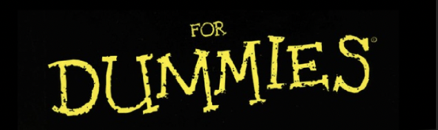

How to curate museums

There are many people that work hard for the curating of museum exhibitions.
Different people with different expertises work on this depending of course
on the topic or main theme of an exhibition. Within sections of this website
you can view how some decisions are made, who makes these decisions, and how
this is done at the university museum in Groningen. An interview with an expert
can be seen and comments from the university museum them selves.
1. Inhibiting Factors
2. Should I exhibit this? A Decision Tree
3. Ancestral artefacts; an experts take
4. The university museum in Groningen
5. Museum Crossword
6. Museum word search
7. Connections